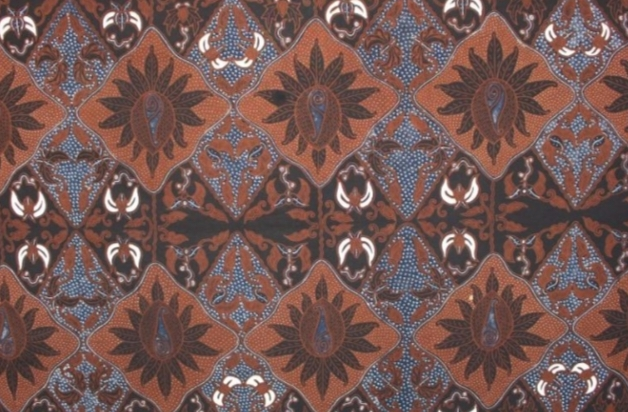
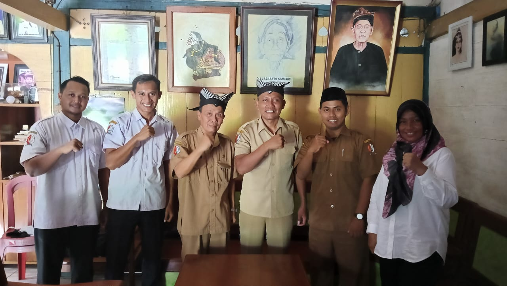

Batik berasal dari kata ambatik yang artinya adalah sebuah kain
yang memiliki banyak titik. Akhiran dari kata batik yaitu tik artinya
adalah titik atau ujung yang digunakan untuk membuat sebuah titik. Batik
adalah seni tradisional yang digunakan untuk membuat motif atau pola pada
kain dengan cara menerapkan lilin pada area yang ingin dipertahankan dari
pewarnaan. Proses ini dapat diulangi beberapa kali dengan penggunaan lilin
yang berbeda untuk menciptakan desain yang kompleks. Batik merupakan
warisan budaya Indonesia yang telah diakui oleh UNESCO sebagai Warisan
Kemanusiaan untuk Budaya Lisan dan Nonbendawi.
Salah satu masyarakat yang masih melestarikan batik di daerah
Bojonegoro adalah masyarakat Samin. Masyarakat Samin tidak hanya menjadi
pelaku dalam melestarikan seni batik, tetapi juga menjadi penjaga warisan
budaya yang mengalirkan makna mendalam dalam setiap kain yang mereka
hasilkan. Dalam batik khas Samin, bukan hanya motif dan teknik yang
menjadi sorotan, tetapi juga filosofi yang terkandung di dalamnya. Melalui
batik, mereka merangkai cerita tentang kesederhanaan dalam kehidupan,
persatuan dalam keragaman, dan kearifan lokal yang telah melampaui zaman.
Selain sebagai seni, batik Samin juga menjadi media untuk mendidik
dan menginspirasi. Masyarakat Samin secara turun-temurun mewariskan
pengetahuan dan keterampilan dalam membuat batik kepada generasi muda,
meleburkan tradisi dengan inovasi. Mereka mengajarkan cara membuat motif,
memilih bahan, dan proses pewarnaan dengan cerita-cerita tentang sejarah,
kearifan lokal, dan nilai-nilai budaya yang menginspirasi.
Keterlibatan masyarakat Samin dalam pendidikan sangat berarti.
Mereka memperkenalkan seni batik Samin kepada masyarakat luas, menjadikan
batik sebagai sarana untuk memperkuat identitas budaya mereka dan
memperjuangkan pelestarian tradisi. Dengan demikian, setiap kain batik
Samin bukan hanya karya seni yang indah, tetapi juga pengalaman yang
mengalirkan cerita, nilai-nilai, dan kebanggaan akan warisan budaya yang
tak ternilai harganya.
Estetika dan eksotika Budaya Samin di Desa Margomulyo, menarik
perhatian banyak pihak, kehidupan warganya yang sederhana dengan esensi
ajaran lima Pitutur luhur yang masih dipegang erat pengikutnya menjadi
magnet para pihak untuk mengenal dan menggali lebih dalam budaya Samin
Bojonegoro.
Budaya Samin tidak hanya menawarkan gelitik eksotika namun juga
merupakan ajaran hidup bagi semua yang tenggelam dalam Pitutur luhur yang
hingga kini masih dijalankan dengan baik oleh warganya bahkan bagi
pengikutnya yang notabene orang luar Samin. Samin sebagai ajaran dan
sebagai budaya seakan tidak ada habisnya untuk digali dan dipelajari,
banyak mahasiswa atau budayawan yang menjadikan budaya samin sebagai obyek
penelitian, Sugeng Wardoyo S SN, M.Sn warga Kelurahan Kerten, Kota
Surakarta salah satunya, melakukan penelitian budaya Samin mulai dari
tahun 2018 hingga sekarang menjadi pintu terlahirnya artefak batik Samin
(Ageman). Melalui pendekatan esensi ajaran luhur ditransformasikan atau
diterjemahkan menjadi bentuk visual diwujudkan menjadi artefak batik Samin
Margomulyo Bojonegoro.
Berawal dari merasakan kehidupan yang Prasojo (sederhana) warga
Samin yang masih kental memegang erat budaya ajaran leluhurnya menarik
perhatian Sugeng untuk melakukan penelitian dengan pendekatan komunikasi
dan observasi terhadap perilaku warga Samin, yang menurutnya meski
sederhana namun memilki kekuatan spiritual yang besar.
Melihat udeng yang dipakai oleh Mbah Harjo Kardi dan kyai kyai
samin mencoba memahami esensi lima pitutur luhur Samin dan muncul
kegelisahan dalam benak Sugeng, sampai kapan hal ini masih bisa terjaga
dan diugemi (dilaksanakan) warganya, kedepannya seperti apa? Melalui
diskusi dengan mas Bambang Sutrisno putra bungsu Mbah Harjo Kardi saya
mencoba menggali budaya Samin, dasarnya adalah ingin lebih tahu ajaran
pitutur luhur dan ikut melestarikan serta mengenalkan Samin kepada dunia
luar, Tutur Sugeng.
Hingga disatu malam, dia bermimpi bertemu dengan Raden Kohar atau
Samin Surosentiko seakan beliau memberikan signal membuka pintu ijin untuk
menggali lebih dalam budaya Samin, bergayung sambut Mbah Haryo Kardi
sesepuh warga Samin juga membuka jalan untuk diteruskan penelitian dengan
menjawab mimpi Sugeng Wardoyo ” Pancen wis Titi wancine” ( Memang Sudah
tiba waktunya), yang dimaksud adalah sudah tiba saatnya orang luar
mengenal lebih dalam budaya Samin. Setelahnya secara tidak terduga dan
tidak terencanakan pengalaman spiritual dialami Sugeng Wardoyo dengan
mendapatkan Ilham akan motif Batik (Ageman) Samin. Dengan kekuatan
spiritual melalui olah pikir, “Roso” ( Rasa yang muncul dari hati) dan
perenungan yang mendalam Sugeng mampu menangkap kemunculan Ilham berupa
obor, Sekar Wijaya Kusuma, Sekar cempoko dan tumpeng, menjadi inspirasi
motif artefak batik Samin.
“Secara sederhana penjelasanya adalah ajaran Samin yang bersifat
verbal itu saya perdalam dengan banyak melakukan diskusi dengan Mas
Bambang dan Mbah Harjo Kardi, setelahnya Ilham motif itu muncul dari
perenungan spiritual berdasarkan hal-hal yang terkait budaya dan ajaran
Samin yang bersifat Verbal kemudian ditransformasikan ke dalam bentuk
visual “. Terang Sugeng.
Prosesnya kemunculan Ilham bentuk motif artefak batik itu muncul
dari proses perenungan dimana semua aktifitas merupakan laku rasa yang
terus mengalir mencari daya hidup berkelanjutan menggali esensi pitutur
luhur Samin Margomulyo Bojonegoro. Dan setelahnya saya dan mas Bambang
mencoba mendiskusikannya kemudian menjelaskan kepada Mbah kung Harjo Kardi
dan beliau menganggukkan kepala tanda setuju.
Menurut Sugeng dasarnya adalah melalui pendekatan metode empatetik,
yaitu mencoba masuk lebih dalam ke kehidupan warga Samin, dengan melakukan
ajur ajer ( lebur membaur) dengan melakukan komunikasi aktif dari hati,
dimana karya yang terlahir akan bermanfaat bagi masyarakat luas. “jadi
proses munculnya Ilham Motif tidak hanya melalui pendekatan akademis seni
rupa semata namun ada unsur perenungan dan spiritual dengan menangkap
ilham dan terlahir motif artefak batik Samin” ungkapnya.
Beberapa motif batik masyarakat Samin yang diteliti oleh Dr. Sugeng
Wardoyo adalah sebagai berikut:
Motif Obor Sewu
Sketsa Obor Sewu Udheng Motif Obor Sewu
Bentuk visual obor melambangkan sebagai pepadang atau penerang
hati dalam menjalani dinamika kehidupan, menjadi kontrol perilaku dan
sikap baik dalam bertutur maupun Perbutan. Kerukunan yang dibangun dari
konstruksi nilai kejujuran, kesabaran, usaha keras (trokal dan Narimo)
menerima dengan ikhlas untuk mencapai tujuan hidup mulia. Untuk lebih
lengkap silakan klik link
Artikel Dr. Sugeng Wardoyo
ini!
Bentuk visual Sekar Wijaya Kusuma melambangkan kewibawaan yang
dilandasi kesabaran tanpa winates. Mengedepankan kerukunan, perdamaian
dan persatuan.
Motif kamulyan Jati
Jarik Motif Kamulyan Jati
Bentuk visual Sekar Wijaya Kusuma melambangkan kewibawaan yang
dilandasi bisa rasa rumagsa dan welas asih, mengutamakan kebersamaan
serta gotong royong.
Motif Margomulyo

Jarik Motif Margomulyo
Bentuk visual sekar Wijaya Kusuma melambangkan kewibawaan yang
dilandasi rasa menep semeleh nengutamakan kebersamaan dan kegotong-
royongan.
Motif Sri Kuncoro
Selendang Motif Sri Kuncoro
Struktur pola selendang batik Sri Kuncoro terdiri dari stilasi
bunga cempaka mulya dengan susunan sulur dibagian tengah dan bagian
tumpal. Stilasi tumpeng dengan susunan berjajar dibagian samping kanan
kiri. Stilasi obor dengan susunan berhadapan dibagian tengah dan samping
kanan kiri. Dengan center of interest motif bunga cempaka mulya yang
dikombinasikan motif tumpeng dan motif obor menjadi kesatuan yang
harmonis. Makna filosofisnya adalah Sri bermakna rejeki dan Kuncoro
memiliki makna kebahagiaan, jadi dengan memakai motif Sri Kuncoro
diharapkan memperoleh berkah kebahagiaan berupa kecukupan rejeki, kasih
sayang dan ketentraman lahir dan batin dalam kehidupan rumah tangga.
Motif margo Utomo
Jarik Motif Margo Utomo
Bentuk visual Sekar cempaka mulya melambangkan keikhlasan hati
yang membawa ketentraman lahir dan batin. Lebih pada kecerdasan untuk
ngulawentah rasa yang bersinergi dengan keharmonisan dan keselarasan
alam.
Motif margo kinasih
Jarik Motif Margo Kinasih
Motif “Margo Kinasih” (2022). Bentuk visual Sekar cempaka mulya
melambangkan kemurnian kasih sayang membawa semangat untuk guyub rukun
dalam mewujudkan cita cita luhur.
Motif Peseksen Luhur
Jarik Motif Peseksen Luhur
Bunga cempaka mulya merupakan perlambang kesetiaan cinta kasih
dalam meneguhkan niat untuk nyawiji membangun rumah tangga, berpatokan
pada siji Kanggo selawase (satu untuk selamanya), lebih pada kekuatan
hati untuk selalu memegang teguh nilai nilai luhur bermuara pada
ketentuan jiwa yang bersinergi dengan keselarasan alam semesta.
Demikian uraian tentang batik Samin yang telah diteliti oleh Dr.
Sudeng Wardoyo. Jika pembaca ingin mengetahui lebih jauh lagi tentang
Batik Samin yang berada di daerah Blora, pembaca bisa membuka artikel yang
ditulis oleh Dwi Wahyuni Kurniawati, Rizka Alfiana Imawati, dan Purwanto
yang berjudul:
"Batik Samin Sambongrejo Blora: Simbol Identitas Budaya"
atau klik tombol
Download Artikel
Sejarah Samin
Berikut adalah artikel yang membahas tentang sejarah Samin:
Dr. Sugeng Wardoyo (kanan) bersama Mbah Harjo Kardi (kiri) di kediaman
Dalam ajaran Samin di Bojonegoro, para pengikutnya diajarkan lima
pitutur luhur. Pertama soal “Laku jujur, sabar, trokal, lan nrimo”
Artinya berprilaku baik, memiliki sifat jujur dan sabar. Kedua, “Ojo
dengki srei, dahwen kemiren, pekpinek barange liyan, artinya Tidak boleh
memiliki sifat iri dengki, rasa keiinginan memiliki dan mengambil hak
orang lain. Ketiga ”Ojo mbedo mbedakno sapodo padaning urip, kabeh iku
sedulure dewe” artinya Jangan membeda bedakan sesama manusia, semua
adalah saudara, Keempat ”Ojo waton omong, omong sing nganggo waton”
Artinya Jangan asal bicara, namun bicaralah dengan aturan” Dan yang
kelima adalah ”Biso Roso Rumongso” Artinya Jadilah manusia yang memiliki
rasa empati.
Ajaran SaminPitutur Luhur SaminPenggunaan Udheng motif Obor Sewu

Kunjungan ke rumah Mbah Hardjo KardiPatung Samin Surosentiko